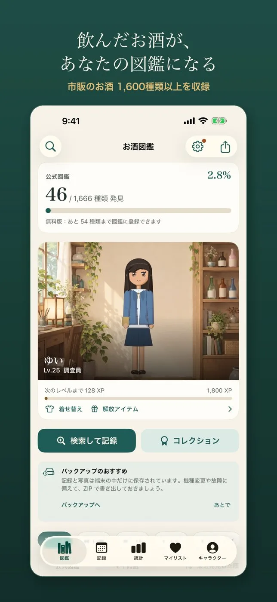
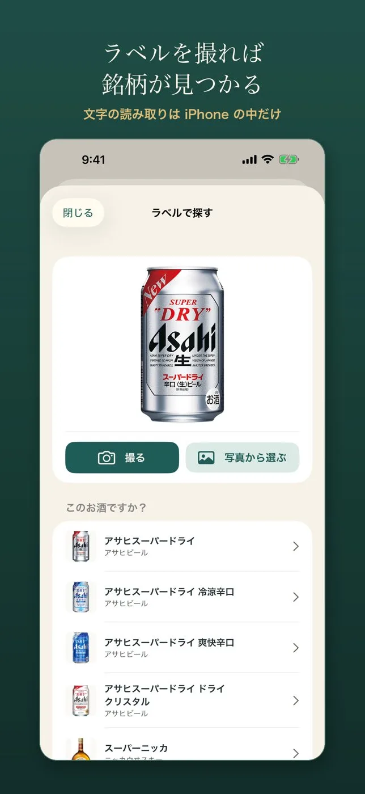
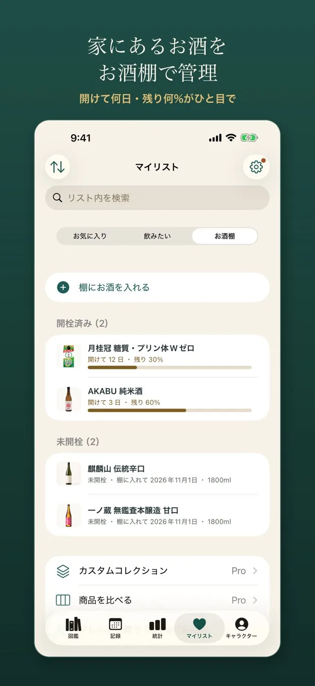
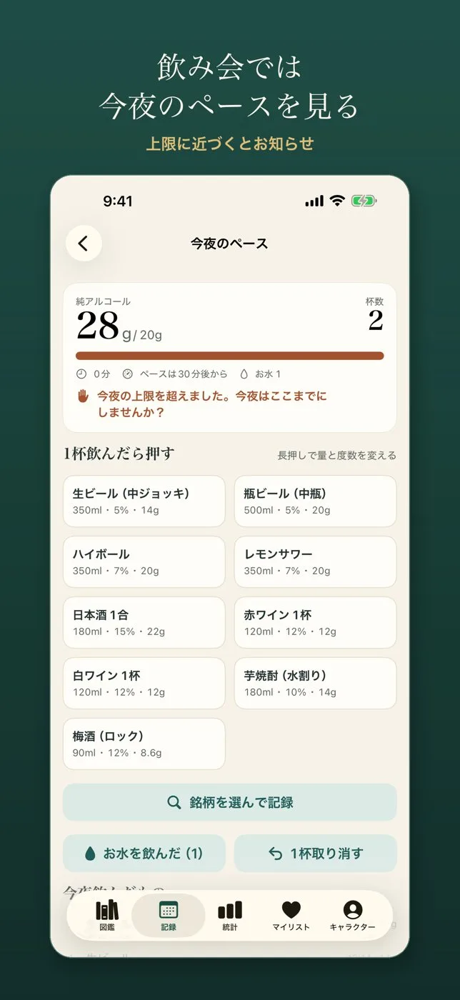

お酒図鑑（App Store での名前は「お酒図鑑 - 飲んだお酒の記録帳」）は、飲んだお酒を記録して、自分だけの図鑑を集めていく iPhone アプリです。市販のお酒2,200種類以上を収録していて、無料ではじめられます。アカウント登録は不要です。この記事では、できること、記録の手順、無料版と Pro のちがいをまとめます。内容は、2026年11月20日時点の App Store の情報です。
注意このアプリは、20歳以上の方を対象としています。飲酒運転は法律で禁止されています。妊娠中・授乳期の飲酒は、胎児・乳児の発育に悪影響を与えるおそれがあります。
01お酒図鑑はどんなアプリ？

飲んだお酒を探して記録すると、そのお酒が自分の図鑑に登録されていくアプリです。初めて飲んだお酒は「発見」として図鑑に入ります。
収録しているのは、日本酒・ビール・ワイン・ウイスキー・焼酎・泡盛・カクテル・スピリッツ・チューハイ・梅酒です。どれも、メーカー・輸入元の公式情報をもとにしています。図鑑では、度数・産地・品種などの公式の情報を確認できます。
記録・写真・味の記録・お酒棚は、端末の中だけに保存されます。ZIP（複数のファイルを1つにまとめる形式）でバックアップできるので、機種変更にも対応しています。
02飲んだお酒を記録する手順

記録は、次の流れで進みます。
- 商品名・メーカー・ブランドで検索して、飲んだお酒を探します。ラベルを撮って、銘柄の候補を出すこともできます。
- 「飲んだ」で記録します。
- 飲んだ日を選びます。「今日」「昨日」「日付を選ぶ」「月だけ覚えている」「いつか覚えていない」から選べるので、昔飲んだお酒もそのまま記録できます。
- 残したい人は、量・場所・飲み方・メモ・写真も残します。
- 甘辛・香り・コク・また飲みたいかを、タップで残します。
ラベルの文字の読み取りは iPhone の中だけで行われ、写真は保存も送信もされません。英語のラベルにも対応しています。
銘柄が分からないときは、「ビール」「レモンサワー」のように、銘柄を決めずに記録することもできます。
03記録をふり返る機能

ためた記録は、いくつかの形でふり返れます。
| 機能 | できること |
|---|---|
| 図鑑 | ジャンル別の達成率と地域ランキングを見られる |
| カレンダーと統計 | 飲んだ日をカレンダーでふり返る。月別の推移も見られる |
| 産地マップ | 飲んだお酒の生まれた場所を、47都道府県の地図と国の一覧で塗りつぶす |
| 酒蔵・醸造所めぐり | 約370の造り手ごとに、収録商品のうち何種類飲んだかを表示。見学や試飲に行った日とメモを残せる |
| 家のお酒棚 | 家にあるお酒を、未開栓・開栓済み・飲みきったで管理。「開けて何日」「残り何%」が分かる |
| 好み分析 | ジャンルごとに「辛口寄り・香り控えめ」などの傾向を表示 |
| 研究者キャラクター | 記録するほど経験値がたまり、レベルが上がる。髪型・衣装・背景・小物の着せ替えもある |
Game Center（Apple のゲーム用のしくみ）のフレンドと、図鑑の発見数・レベルのランキングを比べることもできます。送られるのは、発見数とレベルだけです。
04飲んだ量を見える化する機能

お酒図鑑には、飲んだ量をつかむための機能があります。
1つめは、純アルコール量の計算です。純アルコール量は、お酒に含まれるアルコールそのものの量（g）のことです。飲んだ量と度数から自動で計算され、日ごと・週ごとにグラフで表示されます。缶・小瓶のビールやチューハイは「1本」として自動で計算されます。グラフには、厚生労働省「健康に配慮した飲酒に関するガイドライン」の目安（1日あたり男性40g・女性20g）の線を引けます。
2つめは、「今夜のペース」です。飲み始めに上限（純アルコール20g・40g、2杯・3杯など）を決めて、1杯ごとにボタンを押します。今夜の純アルコール量と1時間あたりのペースが表示され、上限に近づくとお知らせが出ます。お水を飲んだ回数も数えられます。押したお酒は、そのまま飲酒記録になります。
05無料版と Pro のちがい
無料版では、公式図鑑に登録できる数が100種類までです。登録済みのお酒は、無料版でもずっと記録できます。
有料の「お酒図鑑 Pro」には、次の内容が入っています。
| Pro の内容 | 説明 |
|---|---|
| 図鑑の登録数 | 無制限 |
| 高度な統計 | 前年比較・推移・ランキング |
| 商品の比較 | 最大3商品 |
| CSV 出力 | 条件付きで書き出せる |
| カスタムコレクション | 自分で作るコレクション |
| 禁酒モード | 休肝日カレンダー・目標・概算節約額 |
| 広告 | なし |
Pro のプランは、買い切り・年額・月額の3つです。どのプランでも、使える機能は同じです。無料トライアルはありません。価格は App Store のページで確認してください。
注意月額・年額は、自動更新のサブスクリプション（期間ごとに自動で更新される支払い）です。期間終了の24時間前までに解約しない限り、同じ期間・価格で自動更新されます。解約は、App Store のアカウント設定からできます。
06バージョン 1.0.2 で増えたお酒
公開中の版は 1.0.2 です。この版では、日本酒が大幅に増えました。
- 日本酒は、全国の酒蔵の銘柄を約830種類収録（これまでの2倍以上）
- 焼酎・泡盛は、約240種類
- 収録数は、全体で2,200種類を超えた
どの銘柄も、造り手の公式情報をもとにしています。
07まとめ
お酒図鑑は、飲んだお酒を記録して、図鑑・産地マップ・カレンダーでふり返るアプリです。純アルコール量の計算や「今夜のペース」で、自分の飲んだ量をつかむこともできます。無料版でも100種類まで図鑑に登録できるので、まずは最近飲んだ1本を記録するところから試してみてください。
ダウンロードは App Store から。App Store で見る